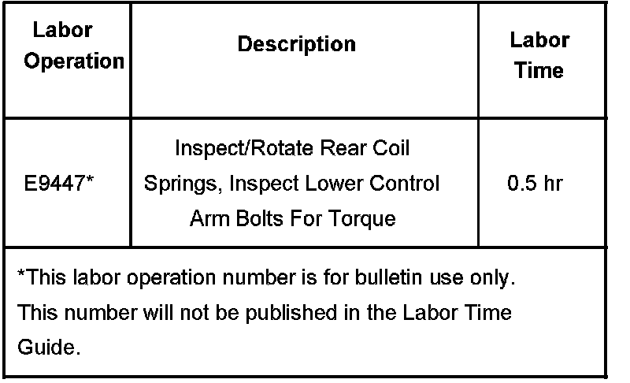

Suspension - Rear Suspension Squeak/Clunk or Rattle
Bulletin No.: 06-03-09-007ADate: August 01, 2007
TECHNICAL
Subject:
Squeak, Rattle or Clunk Noise In Rear Suspension Over Bumps, During Acceleration or While Braking (Inspect/Rotate Rear Coil Springs and Inspect Lower Control Arm Bolts For Proper Torque)
Models:
2007-2008 Cadillac Escalade, Escalade ESV, Escalade EXT
2007-2008 Chevrolet Avalanche, Suburban, Tahoe
2007-2008 GMC Yukon, Yukon XL, Yukon Denali, Yukon Denali XL
with Premium Smooth Ride (RPO ZW7) or Off Road (RPO Z71) Chassis Package
1500 Series Only
Supercede:
This bulletin is being revised to add additional models, model years and update information. Please discard Corporate Bulletin Number 06-03-09-007 (Section 03 - Suspension).
Condition
Some customers may comment on a squeak or rattling noise in the rear of the vehicle when going over bumps, during acceleration or while braking. Also, a clunk noise may be heard in the rear suspension when jounced or moved.
Cause
This condition may be caused by the rear spring insulator contacting the vehicle's frame rail and creating the noise, or the lower control arm bolts may not be tightened to specification.
Correction
Inspect/rotate the position of the rear coil springs and inspect the lower control arm bolts for proper torque.
Lift the vehicle and support the rear axle. Refer to Lifting and Jacking the Vehicle in SI.
Remove the lower shock absorber bolts and nuts.
Lower the rear axle until the rear coil springs can be rotated.
Rotate the springs to gain the most amount of clearance between the spring and the side of the vehicle's frame rail. Inspect the spring plastic insulator sleeve for damage. If damage is found on the plastic insulator sleeve, it may be necessary to replace the spring. Raise the rear axle.
Install the shock absorber, bolts and nuts.
Tighten
Tighten the lower shock absorber bolts and nuts to 115 N.m (85 lb ft).
Inspect the lower control arm bolts for proper torque.
Do not tighten the lower control arm bolts unless the suspension is at ride height.
Tighten
Tighten the lower control arm to frame bolts to 140 N.m (103 lb ft).
Tighten
Tighten the lower control arm to axle bolts to 160 N.m (118 lb ft).
Warranty Information

For vehicles repaired under warranty, use the table.

Disclaimer